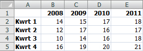
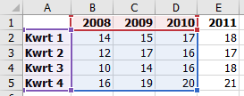
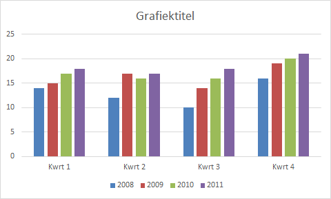
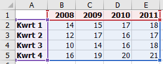
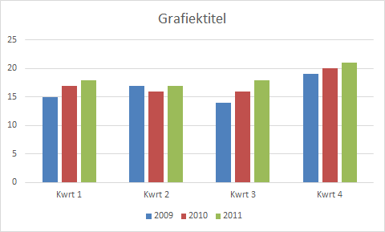
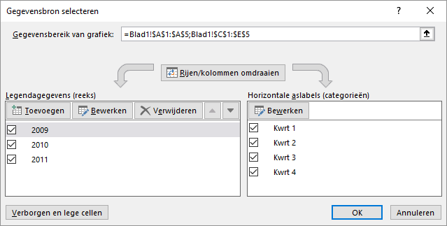
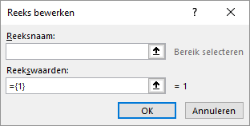
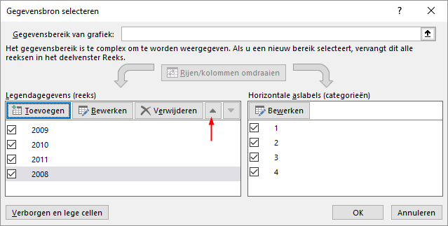

Via een aantal kleine oefeningen leer je diverse mogelijkheden om gegevensreeksen aan
een grafiek toe te voegen en te verwijderen.
Het komt regelmatig voor dat aan een bestaande grafiek een nieuwe gegevensreeks moet
worden toegevoegd of dat een reeds aanwezige gegevensreeks verwijderd moet worden.
Wanneer een grafiek geselecteerd is, worden de bijbehorende brongegevens in het
werkblad met gekleurde kaders gemarkeerd.
Wanneer de nieuwe reeks die toegevoegd moet worden aansluit bij het gemarkeerde
gebied, dan kan het gegevensbereik eenvoudig uitgebreid worden door te slepen. En
een reeks die aan het begin of het eind van het gemarkeerde gebied kan door slepen
verwijderd worden.
Wanneer een reeks niet door slepen toegevoegd of verwijderd kan worden, dan moet er
van het dialoogvenster Gegevensbron selecteren gebruik gemaakt
worden. Beide technieken zullen in dit onderdeel gebruikt worden.
Bestand:Bakkerij_Grafiek
Open het hulpbestand.
Onderdeel: nieuwe gegevensreeks toevoegen
Voeg nieuwe gegevens voor het jaar 2011 toe in het gebied E1:E5 zoals in de
volgende figuur te zien is.
Figuur 1: Nieuwe gegevens voor het jaar 2011

Onderdeel: gegevensreeks 2011 toevoegen aan grafiek door slepen
Selecteer de grafiek.
De brongegevens op het werkblad zijn geselecteerd met formaatgrepen.
Figuur 2: Gemarkeerde brongegevens voor grafiek

Versleep de formaatgreep rechtsonder om de nieuwe gegevens op te nemen.
De grafiek wordt automatisch bijgewerkt en bevat nu ook de gegevens voor
2011.
Figuur 3: Grafiek met gegevensreeksen 2008-2011

Onderdeel: gegevensreeks 2008 verwijderen door slepen
Selecteer de grafiek.
De brongegevens op het werkblad zijn geselecteerd met formaatgrepen.
Figuur 4: Gemarkeerde brongegevens 2008-2011

Versleep de fromaatgreep linksonderom de gegevens voor 2008 uit te
sluiten.
De grafiek wordt automatisch bijgewerkt en bevat nu de gegevens voor
2009-2011
Figuur 5: Grafiek met gegevensreeksen 2009-2011

Onderdeel: reeks 2008 toevoegen en reeks 2011 verwijderen via
dialoogvenster
Klik met de rechter muisknop op de grafiek en kies uit het snelmenu voor
Gegevens selecteren....
Tip: Een alternatief is Ontwerpen > Gegevens selecteren (groep Gegevens).
Figuur 6: Gegevensbron selecteren

Klik op de knop Toevoegen.
Figuur 7: Toevoegen nieuwe reeks

Reeksnaam
De cel die de naam van de gegevensreeks bevat.
Reekswaarden
Het bereik van de cellen met de gegevenswaarden.
Zet de cursor in het vak Reeksnaam en selecteer dan in
het werkblad cel B1.
Selecteer de inhoud van het vak Reekswaarden en
selecteer dan in het werkblad het gebied B2:B5.
Klik OK.
In de grafiek en in het dialoogvenster Gegevensbron
selecteren is de gegevensreeks 2008 toegevoegd. Echter deze
gegevensreeks is achteraan toegevoegd, waardoor de volgorde niet meer
logisch is.
Figuur 8: Volgorde gegevensreeksen wijzigen

Selecteer in het dialoogvenster reeks 2008 en klik
daarna 3 keer op de pijl omhoog zodat de gegevensreeks
2008 de eerste reeks is.
Selecteer in het dialoogvenster reeks 2011 en klik op de
knop Verwijderen.
De gegevensreeks 2011 wordt verwijderd. De beginsituatie met daarin de
gegevensreeks 2008-2010 is weer terug.